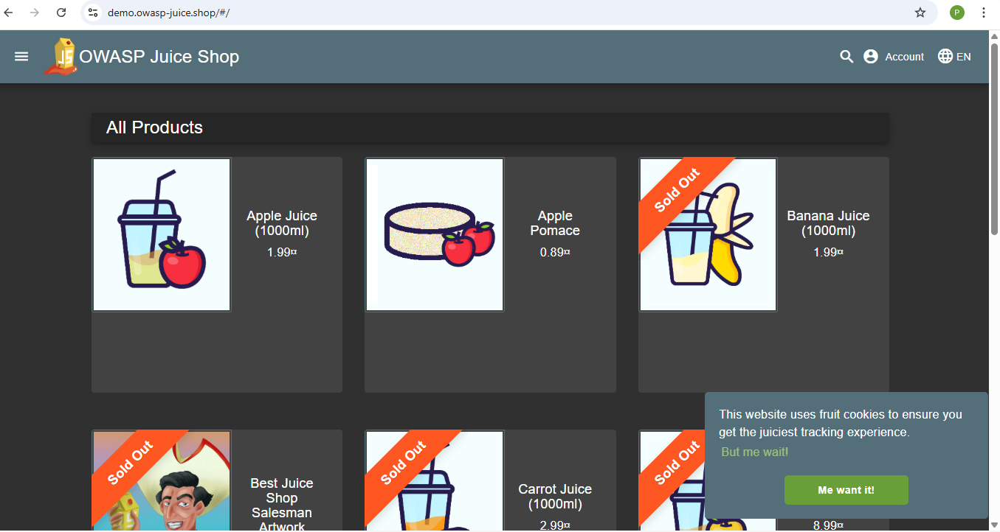
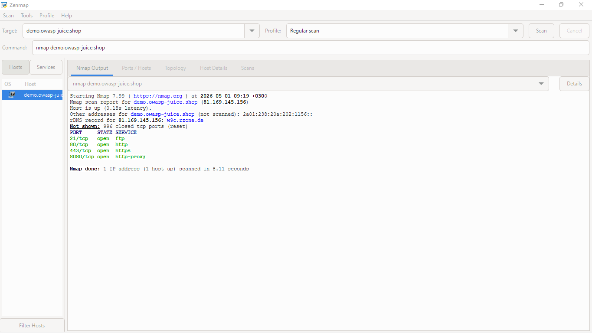
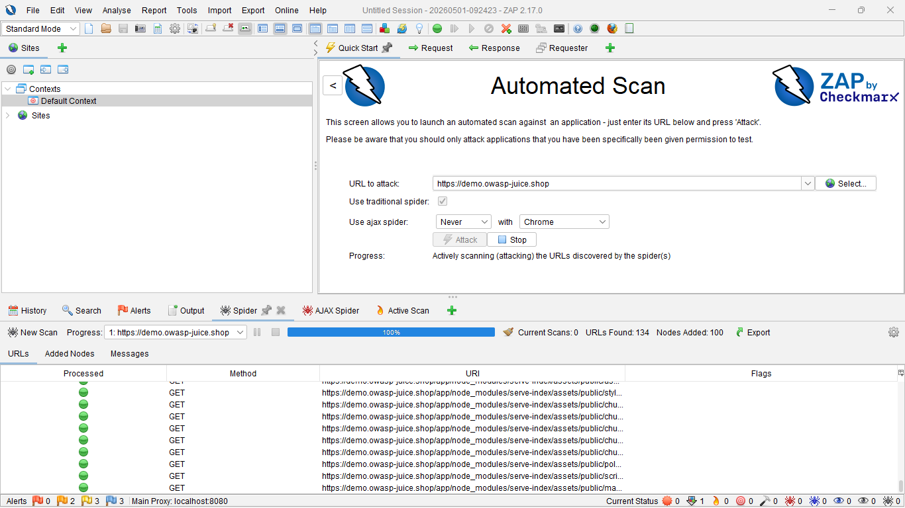
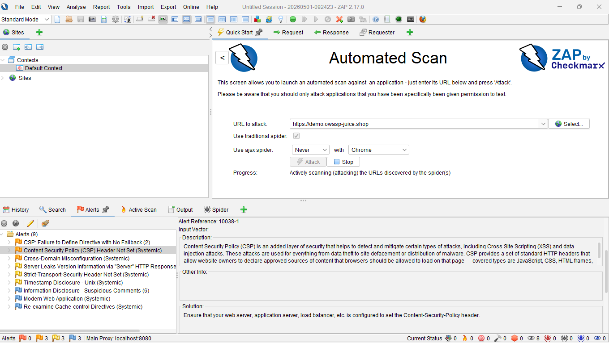
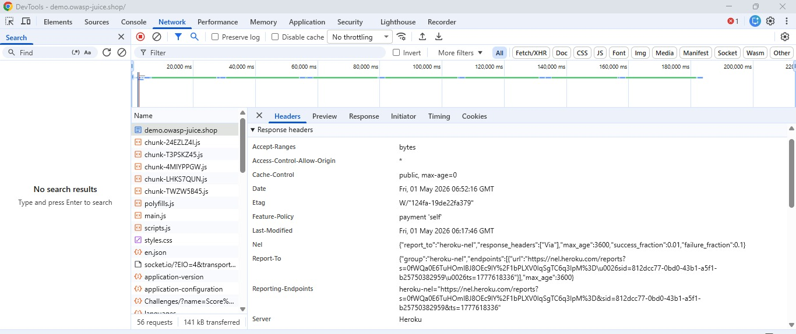

Security Audit Portfolio
Lead Auditor: Prudence
Future Interns Cybersecurity Program | May 2026
The goal of this assessment was to perform a black-box security audit on the OWASP Juice Shop environment.

Nmap port scanning to identify open services and backend ports.
Automated crawling and scanning using OWASP ZAP.
Verifying findings using Browser DevTools and Response Headers.
Initial scans identified active ports and service banners.
Port 3000: Identified as the main Node.js/Express application listener.
Port 80/443: Standard web traffic ports active.


The DAST tool successfully spidered the application tree, mapping over 20 unique endpoints including APIs and static assets.
The "Content-Security-Policy" header is not implemented. This allows the browser to execute any script, significantly increasing XSS risk.
Define a strict CSP whitelist to prevent unauthorized script execution.


Response headers explicitly disclose the use of Heroku and Express.
This allows attackers to focus on version-specific exploits (CVEs).
The application can be embedded in an iFrame on malicious sites.
Impact: Attackers can trick users into performing unintended actions via UI redressing.
| Threat Category | Vulnerability | Severity | Priority |
|---|---|---|---|
| Injection | Missing CSP Header | Medium | High |
| Broken Auth | Insecure Cookie Flags | Medium | Medium |
| Reconnaissance | Server Banner Leak | Low | Low |
Hardening HTTP headers (CSP, HSTS, X-Frame).
Suppressing server identity headers across the stack.
Implementing regular DAST scans into the CI/CD pipeline.
While no "Critical" exploits were found, the application lacks Defense-in-Depth. By securing the identified headers and obfuscating the infrastructure, the overall security posture will improve significantly.
Thank you for your review
Assessor: Prudence
Contact: nthenyaprudence9@gmail.com